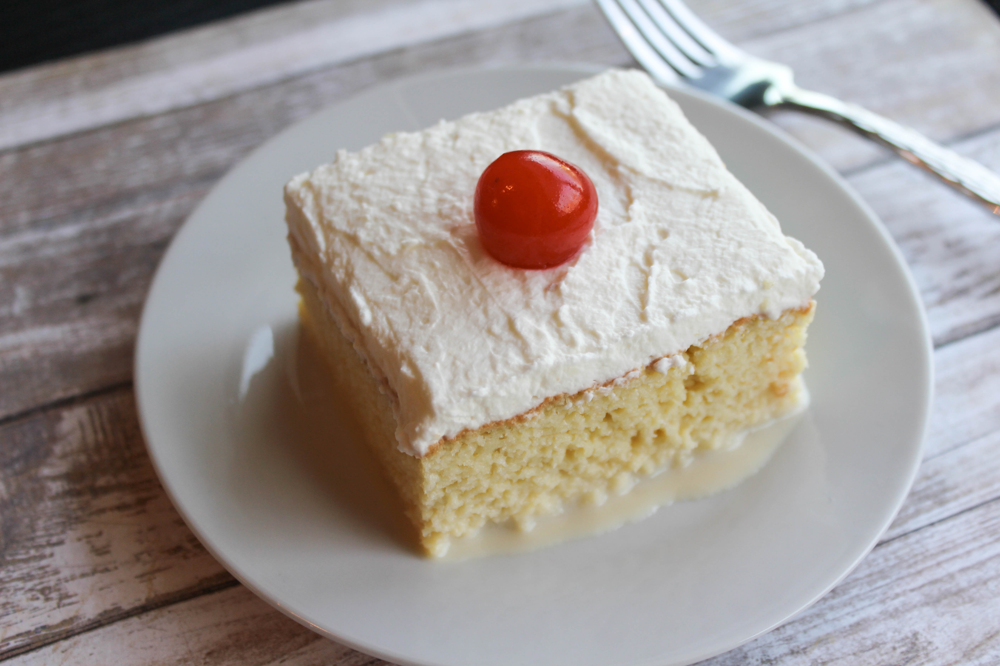

|

|
- 1 cup all-purpose flour
- 1 1/2 teaspoons baking powder
- 1/4 teaspoon salt
- 5 large eggs , separated
- 1 cup granulated sugar , divided
- ½ teaspoon vanilla extract
- 2 cups whole milk
- 1 (14 ounce) can sweetened condensed milk
- 1 (12 fluid ounce) can evaporated milk
- 1½ cups heavy whipping cream
- 1 cup white sugar
- 1 teaspoon vanilla extract
|